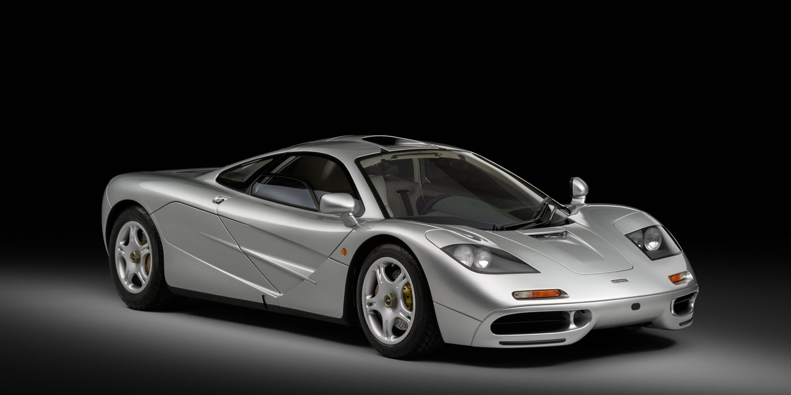
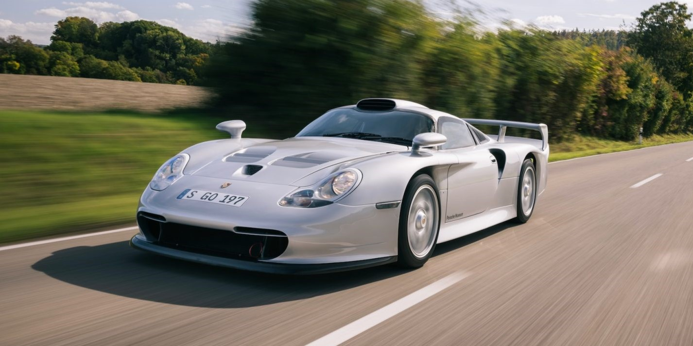
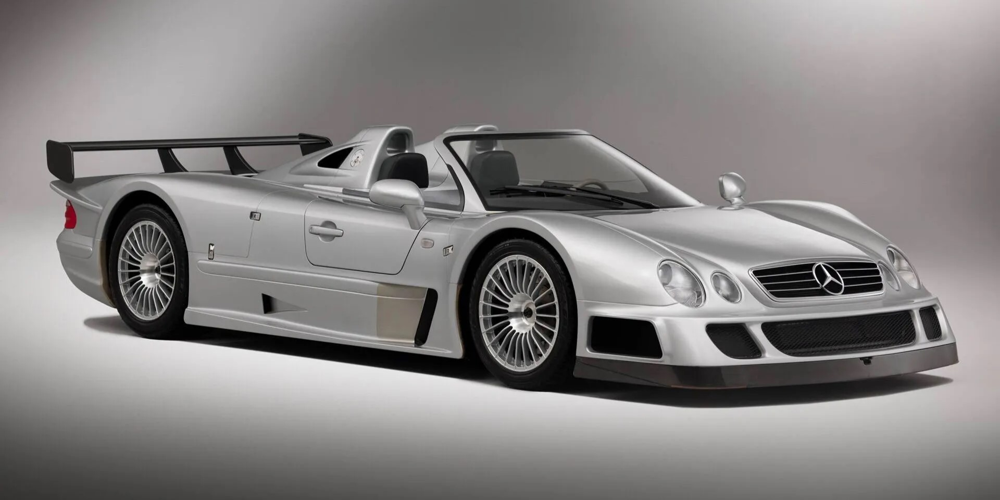

The Classic Trinity
Discover the legendary machines that ruled the GT1 era — raw, unforgiving, and built for both the road and the track. These icons pushed the limits of engineering before hybrids took over.
McLaren F1
Still considered one of the greatest road cars ever made. Center seat, BMW V12, and unmatched purity.
Porsche 911 GT1
Porsche's homologation special — race-bred, low-slung, and incredibly rare. Built to win Le Mans and rule the streets.
Mercedes-Benz CLK GTR
A V12-powered street-legal race car. Born on the track, limited on the road. One of the most extreme homologation cars ever.